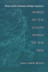

|
Rave Culture
The Alteration and Decline of a Philadelphia Music Scene
Anderson, Tammy L.
240 pp • 6x9 • Spring 2009
paper 978-1-59213-934-7
cloth 978-1-59213-933-0
|
 |
Merengue
Dominican Music and Dominican Identity
Austerlitz, Paul, foreword by Robert Farris Thompson 224
pp • 6x9 • Fall 1996
paper 978-1-56639-484-0
cloth 978-1-56639-483-3
|
 |
The Strange Music of Social Life
A Dialogue on Dialogic Sociology
Bell, Michael Mayerfeld, edited by Ann Goetting 248 pp • 5.5x8.25 • Spring 2011
paper 978-1-4399-0724-5
cloth 978-1-4399-0723-8
|

|
Music, Style, and Aging
Growing Old Disgracefully?
Bennett, Andy
226 pp • 5.5x8.25 • Fall 2012
paper 978-1-4399-0808-2
cloth 978-1-4399-0807-5 |
 |
Alphabet Movers
Benzwie, Teresa, Illustrated by Robert Bender
32 pp • 8.5x11 • Spring 2011
cloth 978-1-930798-08-3 |
|
Numbers on the Move
1 2 3 Dance and Count with Me
Benzwie, Teresa, Illustrated by Mark Weber
32 pp • 11x8.5 • Spring 2011
cloth 978-1-4399-0342-1 |
 |
Softly, with Feeling
Joe Wilder and the Breaking of Barriers in American Music
Berger, Edward
400 pp • 6x9 •
Spring 2014
cloth 978-1-4399-1127-3 |
 |
Reggae
Routes
The Story of Jamaican Music
Chang, Kevin O’Brien and Wayne Chen 256
pp • 6.75x9.25 • Spring 1998
paper 978-1-56639-629-5
|
 |
Policing
Pop
edited by Cloonan, Martin and Reebee Garofalo 256
pp • 7x10 • Fall 2002
paper 978-1-56639-990-6
cloth 978-1-56639-989-0
|
 |
West
African Pop Roots
Collins, John 382 pp • 6x9 • Spring
1992
paper 978-0-87722-916-2
cloth 978-0-87722-793-9 |
|
"I Hear America Singing"
Folk Music and National Identity
Donaldson, Rachel Clare
234 pp • 6x9 • Fall 2014
paper 978-1-43991-079-5
cloth 978-1-43991-078-8 |
 |
In
Griot Time
An American Guitarist in Mali
Eyre, Banning 280 pp • 6x9 • Spring
2000
paper 978-1-56639-759-9
cloth 978-1-56639-758-2
|
 |
Arsenio
Rodr�guez and the Transnational Flows of Latin Popular Music
Garcia, David F. 224 pp � 6x9 � Spring 2006
paper 978-1-59213-386-4
cloth 978-1-59213-385-7
|

|
The Dance of Politics
Gender, Performance, and Democratization in Malawi
Gilman, Lisa
268 pp • 6x9 • Spring 2009
paper 978-1-59213-986-6
cloth 978-1-59213-985-9
|
|
Whisper Not
The Autobiography of Benny Golson
Golson, Benny and Jim Merod
352 pp • 6x9 • Spring 2016
cloth 978-1-4399-1333-8
|

|
The Day the Dancers Stayed
Performing in the Filipino/American Diaspora
Gonzalves, Theodore S.
228 pp • 5.5x8.25 • Fall 2009
paper 978-1-59213-729-9
cloth 978-1-59213-728-2
|
 |
I
Wanna Be Me
Rock Music and the Politics of Identity
Gracyk, Theodore 304 pp • 6x9 •
Fall 2001
paper 978-1-56639-903-6
cloth 978-1-56639-902-9
|

|
The Hip Hop Underground
The Integrity and Ethics of Racial Identification
Harrison, Anthony Kwame
226 pp • 6x9 • Fall 2009
paper 978-1-4399-0061-1
cloth 978-1-4399-0060-4
|
 |
Jookin'
The Rise of Social Dance Formations in African-American Culture
Hazzard-Gordon, Katrina 248 pp • Spring
1990
paper 978-0-87722-956-8
cloth 978-0-87722-613-0
|

|
I Walked with Giants
The Autobiography of Jimmy Heath
Heath, Jimmy and Joseph McLaren
344 pp • 6x9 • Fall 2009
cloth 978-1-4399-0198-4
|
 |
The
Music of Our Lives
Higgins, Kathleen Marie 288 pp • Fall
1990
cloth 978-0-87722-756-4 |

|
Sounding Off
Rhythm, Music, and Identity in West African and Caribbean Francophone Novels
Huntington, Julie
256 pp • 6x9 • Fall 2009
cloth 978-1-4399-0031-4
|
 |
Salsa World
A Global Dance in Local Contexts
edited by Hutchinson, Sydney
240 pp • 6x9 • Fall 2013
paper 978-1-4399-1007-8
cloth 978-1-4399-1006-1 |
 |
Sound
Tracks
A Musical ABC, Volumes 1-3
Jarrett, Michael 304 pp • 5.5x9 •
Fall 1998
cloth 978-1-56639-641-7
|
|
Pop
Music and the Press
edited by Jones, Steve 288 pp • 6x9 •
Fall 2002
paper 978-1-56639-966-1
cloth 978-1-56639-965-4
|
 |
Sonic Spaces of the Karoo
The Sacred Music of a South African Coloured Community
Jorritsma, Marie 224 pp • 6x9 • Spring 2011
cloth 978-1-4399-0237-0 |
|
Dancing the Fairy Tale
Producing and Performing The Sleeping Beauty
Katz Rizzo, Laura
194 pp • 5.5x8.25 • Fall 2014
paper 978-1-43991-122-8
cloth 978-1-43991-121-1 |
 |
Sound
Sentiment
An Essay on the Musical Emotions
Kivy, Peter, foreword by Joseph Margolis 304
pp • Fall 1989
paper 978-0-87722-677-2
cloth 978-0-87722-641-3 |
 |
Roy
Orbison
The Invention of an Alternative Rock Masculinity
Lehman, Peter 224 pp • 6x9 • Spring
2003
paper 978-1-59213-037-5
cloth 978-1-59213-036-8
|

|
Music, Disability, and Society
Lubet, Alex
208 pp • 5.5x8.25 • Fall 2010
paper 978-1-4399-0026-0
cloth 978-1-4399-0025-3
|
 |
Sounds of the Modern Nation
Music, Culture, and Ideas in Post-Revolutionary Mexico
Madrid, Alejandro L.
224 pp • 5.25x8.25• Fall 2008
cloth 978-1-59213-694-0
|
 |
My Soul's Been Psychedelicized
Electric Factory: Four Decades in Posters and Photographs
Magid, Larry with Robert Huber
200 pp • 10x12 • Spring 2011
cloth 978-1-4399-0180-9 |

|
Frankie Manning
Ambassador of Lindy Hop
Manning, Frankie and Cynthia R. Millman
312 pp • 6x9 • Spring 2007
cloth 978-1-59213-563-9
paper 978-1-59213-564-6 |
 |
Caribbean
Currents
Caribbean Music from Rumba to Reggae
Third Edition
Manuel, Peter with Michael Largey
338
pp • 6x9 • Fall 2016
paper 978-1-4399-1400-7
cloth 978-1-4399-1399-4
|
 |
Caribbean
Currents
Caribbean Music from Rumba to Reggae
Manuel, Peter with Kenneth Bilby and Michael Largey
336
pp • 6x9 • Spring 2006
paper 978-1-56639-339-3
cloth 978-1-56639-338-6
|
|
East
Indian Music in the West Indies
T�n-Singing, Chutney, and the Making of Indo-Caribbean Culture
Manuel, Peter 288 pp • 7x10 • Spring
2000
paper 978-1-56639-763-6
cloth 978-1-56639-762-9
|

|
Creolizing Contradance in the Caribbean
edited by Manuel, Peter
288 pp • 6x9 • Spring 2009
paper 978-1-59213-735-0
cloth 978-1-59213-734-3
|
 |
Bacchanal!
The Carnival Culture of Trinidad
Mason, Peter 192 pp • 6x9 • Fall
1998
paper 978-1-56639-663-9
cloth 978-1-56639-662-2 |
 |
The
Brazilian Sound
Samba, Bossa Nova, and the Popular Music of Brazil
McGowan,
Chris and Ricardo Pessanha
Revised and Expanded Edition
280 pp • 7x10 • Fall 2008
paper 978-1-59213-929-3
cloth 978-1-59213-928-6
|

|
Chilean New Song
The Political Power of Music, 1960s-1973
McSherry, J. Patrice
232 pp • 6x9 • Spring 2015
paper 978-1-4399-1152-5
cloth 978-1-4399-1151-8 |
 |
Swingin'
at the Savoy
The Memoir of a Jazz Dancer
Miller, Norma with Evette Jensen 304 pp •
6x9 • Spring 2001
paper 978-1-56639-849-7
|
|
Unzipped
Souls
A Jazz Journey Through the Soviet Union
Minor, William 256 pp • 6x9 • Fall
1995
cloth 978-1-56639-324-9 |
 |
Maya
Achi Marimba Music in Guatemala
Navarrete Pellicer, Sergio 288 pp • 6x9
• Spring 2005
paper 978-1-59213-292-8
cloth 978-1-59213-291-1
|

|
Klezmer
Music and Community in Twentieth-Century Jewish Philadelphia
Netsky, Hankus
New in Paperback!
186 pp • 6x9 • Spring 2017
paper 978-1-4399-0904-1
cloth 978-1-4399-0903-4
|
|
The
Beat of My Drum
An Autobiography
Olatunji, Babatunde with Robert Atkinson and Akinsola Akiwowo, foreword
by Joan Baez, introduction by Eric Charry 272
pp • 6x9 • Spring 2005
paper 978-1-59213-354-3
cloth 978-1-59213-353-6
|
 |
Music and Social Change in South Africa
Maskanda Past and Present
Olsen, Kathryn
222 pp • 6x9 • Fall 2014
cloth 978-1-43991-136-5 |

|
Oye Como Va!
Hybridity and Identity in Latino Popular Music
Pacini Hernandez, Deborah
238 pp • 6x9 • Fall 2009
paper 978-1-4399-0090-1
cloth 978-1-4399-0089-5
|

|
Ecomusicology
Rock, Folk, and the Environment
Pedelty, Mark
242 pp • 6x9 • Spring 2012
paper 978-1-4399-0712-2
cloth 978-1-4399-0711-5 |
|
Droppin'
Science
Critical Essays on Rap Music and Hip Hop Culture
edited by Perkins, William Eric 288 pp •
6x9 • Fall 1995
paper 978-1-56639-362-1
cloth 978-1-56639-361-4
|
 |
The
Philadelphia Orchestra
A Century of Music
Philadelphia Orchestra Assoc., , edited by John Ardoin 256
pp • 9x12 • Fall 1999
cloth 978-1-56639-712-4 |

|
M�sica Norte�a
Mexican Migrants Creating a Nation Between Nations
Ragland, Cathy
268 pp • 6x9 • Spring 2009
paper 978-1-59213-747-3
cloth 978-1-59213-746-6
|
|  |
Songs
of the Caged, Songs of the Free
Music and the Vietnamese Refugee Experience
Reyes, Adelaida 248 pp • 5.5x8.25 •
Spring 1999
paper 978-1-56639-686-8
cloth 978-1-56639-685-1
|
 |
Philadelphia
Maestros
Ormandy, Muti, Sawallisch
Rodr�guez-Peralta, Phyllis White
192 pp • 6x8 • Spring 2006
cloth 978- 1-59213-487-8
|

|
The Phenomenology of Dance
Sheets-Johnstone, Maxine
Foreword by Merce Cunningham
152 pp • 5.5x8.25 • Spring 2015
paper 978-1-4399-1262-1
cloth 978-1-4399-1261-4 |
 |
We Shall Not Be Moved/No nos mover�n
Biography of a Song of Struggle
Spener, David
208 pp • 5.5x8.25 • Spring 2016
paper 978-1-4399-1298-0
cloth 978-1-4399-1297-3
|

|
Sweating Saris
Indian Dance as Transnational Labor
Srinivasan, Priya
238 pp • 6x9 • Fall 2011
paper 978-1-4399-0430-5
cloth 978-1-4399-0429-9
|
 |
Swing
Era New York
The Jazz Photographs of Charles Peterson
Stokes, W. Royal, photographs by Don Peterson, foreword by Stanley
Dance 232 pp • 10x8 • Fall 1994
paper 978-1-56639-464-2
cloth 978-1-56639-227-3 |
|
Masters
of the Sabar
Wolof Griot Percussionaists of Senegal
Tang, Patricia
Includes CD
224 pp • 6x9 • Fall 2006
paper 978-1-59213-420-5
cloth 978-1-59213-419-9
|
 |
Fela
The Life and Times of an African Musical Icon
Veal, Michael E. 352 pp • 7x10 •
Spring 2000
paper 978-1-56639-765-0
cloth 978-1-56639-764-3
|
 |
Drumming
for the Gods
The Life and Times of Felipe Garc�a Villamil, santero, palero,
and abaku�
V�lez, Mar�a Teresa 256 pp • 6x9 •
Fall 1999
paper 978-1-56639-731-5
cloth 978-1-56639-730-8
|

|
Troubling Gender
Youth and Cumbia in Argentina's Music Scene
Vila, Pablo and Pablo Sem�n, contributions by Elo�sa Mart�n and Mar�a Julia Carozzi
230 pp • 6x9 • Fall 2011
paper 978-1-4399-0267-7
cloth 978-1-4399-0266-0
|
 |
How
I Got Over
Clara Ward and the World-Famous Ward Singers
Ward-Royster, Willa, as told by Toni Rose, foreword by Horace Clarence
Boyer 263 pp • 6x9 • Spring 2000
paper 978-1-56639-490-1
cloth 978-1-56639-489-5
|
 |
Sounding Salsa
Performing Popular Latin Dance Music in New York City
Washburne, Christopher
272 pp • 6x9 • Spring 2008
paper 978-1-59213-316-1
cloth 978-1-59213-315-4
|
 |
Whose National Music?
Identity, Mestizaje, and Migration in Ecuador
Wong, Ketty268
pp • 6x9 • Spring 2012
cloth 978-1-4399-0057-4> |

|
Musicians from a Different Shore
Asians and Asian Americans in Classical Music
Yoshihara, Mari
288 pp • 6x9 • Fall 2007
paper 978-1-59123-333-8
cloth 978-1-59123-332-1
|